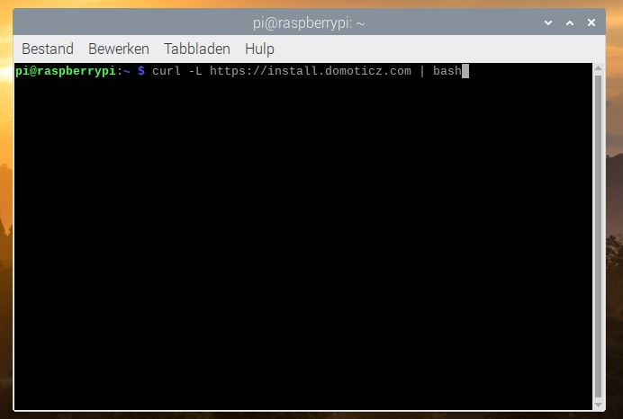

Website siebe
Eindwerk
Handleiding Domoticz
News
Contact
Website siebe
Eindwerk
Handleiding Domoticz
News
Contact
Deze website is gemaakt om mijn eindwerken te uploaden.
Maak een domotica systeem met het door de leerkracht gegeven domotica platform. Stel alles in zodat je een stabiel platform krijgt leg uit via foto’s of filmpjes hoe je dat doet.
Zorg ervoor dat je via een drukknop 1 lamp aan en met de zelfde drukknop de lamp terug uit kan zetten.
Kijk ook om een lamp te dimmen met 1 drukknop.
Kijk om ook een sfeer te creëren b.v. sfeer TV kijken dan dimt de lamp vanzelf tot 30% dan schakelt de tv in en gaan de rolluiken naar beneden met 1 bediening.
Kijk of je systeem ook kan werken met google home. (er is een google home beschikbaar).
Ik moet deze opdracht met domoticz maken. Dit is een open source domotica systeem. Domoticz werkt met een server. Dit wil zeggen dat je een apparaat nodig hebt dat altijd aanligt. Hiervoor heb ik een raspberry pi van school gekregen.
De prijs:
Dit komt uit op 69.93 euro in totaal.
Dit zijn de prijzen van SOS Solutions.
Hieronder staat een handleiding over hoe je domoticz moet klaarzetten en gebruiken.

Voor domoticz kan je elke versie van de raspberry pi gebruiken, ik zou aanraden om een pi 3 of 4 te gebruiken omdat deze sneller zijn dan hun voorlopers.
Voordat je kan starten met je lampen,… te configureren zal je een Domoticz server moeten maken. Niet panikeren want Domoticz maakt de server voor jou. Daarvoor heeft u de raspberry pi voor, deze zal als server gebruikt worden. U kan dit ook met een PC of een server zelf doen maar een raspberry pi neemt niet zoveel plaats in.
Je zal moeten je OS (Operating System) op de SD kaart zetten want de raspberry pi heeft geen intern geheugen dit wil zeggen dat hij alles zal opslaan op de SD kaart. Ik zal dit doen via Raspberry pi imager, je kan dit ook met een flasher als balena etcher doen maar hierbij moet je eerst zelf de OS downloaden en dan flashen naar de SD kaart.
Als je de Raspberry Pi imager app opent krijg je volgend scherm:

Voor de OS te kiezen moet u op CHOOSE OS duwen.

U krijgt dan een pop-up met alle opties. U kan zien dat er 2 Raspberry pi opties zijn en dan heeft u ook nog LibreElec en Ubuntu, wij gaan Raspberry Pi OS kiezen.

De eerste versie is de gewone 32-bit versie van raspberry pi, vroeger heette dit Raspbian. Bij deze versie staat recomended omdat dit de meest voorkomende versie is want deze heeft alles dat je nodig hebt.

Bij raspberry Pi OS (other) zal u de lite en de full versie vinden.


De lite versie heeft geen scherm functie, dit wil zeggen dat als je een scherm aan de HDMI-poort(en) zal hangen dat dit niet zal werken (dit is wel bij full en gewone versie). Bij de lite versie is er ook geen GUI (Graphical User Interface of grafische gebruikersomgeving) dit wil zeggen dat je alles via de command line naar de pi zal moeten sturen. De full versie heeft de gewone versie maar met extra software voor te programmeren. Ik zal de standaard versie gebruiken omdat ik de pi dan aan een tv/scherm kan hangen als er iets niet klopt en ik heb de extra applicaties niet nodig (stel dat u deze later nodig heeft kan u ze nog steeds installeren).
Als u uw software heeft gekozen hoeft u enkel nog uw SD kaart te kiezen en op Write te klikken.

Na een goede 25 minuten is het gedaan, u zal het volgende op uw scherm zien.

Omdat ik de raspberry pi headless (zonder scherm, muis,…) zal gebruiken zal ik moeten ermee kunnen connecteren. Wilt u de pi wel gebruiken met een scherm? Hier leg ik uit hoe u dit moet doen. Ik zal eerst connecteren via SSH (Secure Shell), dan kan ik VNC inschakelen. Met VNC zie je alles wat je op je scherm zou zien op je laptop, je kan dan de raspberry pi gebruiken zonder dat je erbij moet zitten.
Voordat je SSH kan gebruiken heeft je pi internetverbinding nodig. U kan de pi via kabel verbinden, hierbij moet u enkel uw kabel in uw router, accespoint,… Steken. Als u de pi met wifi wil verbinden kan u uitleg hieronder vinden. Als u de pi met kabel verbind kan u dit gewoon overslaan.
Voor u de SD kaart kan uithalen moet u uw wifi nog instellen. Hiervoor zal u de naam en het paswoord van uw internet weten. Het wachtwoord kan je op de router vinden, moest u geen toegang hebben tot uw router kan u alsnog het paswoord weten. Ik zal enkel uitleggen hoe u dit op Windows moet doen, er zijn natuurlijk ook manieren om dit te zien op linux en macOS. Als u uw wachtwoord weet kan u hier door naar het volgende deel.
Ik zal zo uitgebreid mogelijk uitleggen hoe u uw wifi paswoord kan zien. Het eerste dat u moet doen is CMD of opdrachtprompt openen.

Dan moet u ‘netsh wlan show profiles’ typen. Dit geeft alle wifi netwerken dat je computer kent weer. De netsh command is voor te zeggen tegen de computer wat je wilt, hier is dit dus in de categorie internet. Netsh is de network shell dus we zitten in de categorie internet. Wlan staat voor wireless local area network of draadloos lokaal netwerk. Dit is om duidelijk e maken aan de pc dat hij iets met zijn wlan zal moeten doen. Show profiles is toon profielen, hierbij kan u alle internetnamen zien.

U kan zien dat er maar 3 netwerken opkomen bij mij. Ik weet zeker dat het niet Campus Tant ten MSKA Personeel is omdat dit netwerken van op school zijn. Proximus-Home-8810 daartegen is het netwerk van bij mij thuis.
Nu het leuke deel. Het paswoord is zeer gemakkelijk te vinden, u moet enkel netsh wlan show profiles “uw internet naam” key=clear. Dit is dezelfde command als daarjuist met key=clear en uw internet naam erbij. Wat dit zal doen is de key of sleutel tonen. Deze key is het paswoord van het internet. U hoeft enkel achter de key te zoeken.

Voor wat heeft u uw paswoord van uw wifi nu nodig? We gaan een wpa supplicant maken. Dit document zegt tegen de pi wat de naam en het paswoord van uw internet is.
Het document zal er uit zien als volgende: bij country moet u de 2-delige ISO 3166-1 land code geven. Dit toont aan in welk land u woont. Hier kan u een tabel vinden moest u niet in België wonen.

Hieronder staat de tekst zodat u deze kan kopiëren. Let er wel op dat u uw wifi naam, paswoord en landcode moet aanpassen.
ctrl_interface=DIR=/var/run/wpa_supplicant GROUP=netdev
update_config=1
country=<BE>
network={
ssid="<Naam wifi>"
psk="<paswoord wifi>"
}
Dit document moet u opslaan als wpa_supplicant.conf let wel op dat u het document opslaat onder alle bestanden en niet als tekstdocument.

Bij Raspbian is SSH standaard uit omdat dit een manier is van hackers om uw pi over te nemen. Het is heel simpel om SSH aan te leggen, je moet gewoon een leeg kladblok document genaamd ssh op je SD kaart zetten.

Nu kan u de SD kaart uit uw pc halen en in de Raspberry pi steken. Als u de pi in de voeding steekt zal u zien dat hij opstart. In het begin zal u enkel het rode lampje zien branden, het groene zal dan beginnen pinken. Het groene lampje toont aan dat de pi de SD kaart aan het lezen is, dit is ook een teken dat de pi kan schrijven op de SD kaart.
Nadat de pi is opgestart kan u deze zoeken in uw internet. De gemakkelijkste manier is om de ping command te gebruiken (windows bij macOS en linux zal dit anders zijn). Ping is uw pc dat in uw netwerk zoekt achter het IP-adres of de naam dat u ingeeft. U kan ook naar uw router instellingen gaan en de pi zo zoeken. Als u ping raspberrypi.local typt in cmd dan zou u normaal moeten een antwoord krijgen.

U kan zien dat ik een antwoord krijg van 169.254.121.83. Dit is het IP-adres van de pi. Moest ping raspberrypi.local niet werken kan u ping raspberrypi gebruiken, let wel op want als uw buur of iemand in uw straat dan een pi heeft dat deze ook in de lijst zal staan.
Nu dat we het IP-adres weten kunnen we connecteren via SSH. Hiervoor hebben we een app nodig dat SSH verbindingen kan maken. Ik zal putty gebruiken omdat dit de meest aangeraden app is.
Het enige dat u moet doen is het IP-adres in putty ingeven en op open drukken. Let er wel op dat de optie op SSH staat.

Het IP-adres moet u in de balk vanboven ingeven, port staat standaard op 22. Dit kan u laten op 22 staan.

Als u nu op open drukt zal putty verbinding maken met de pi.

De eerste keer dat u verbind met de pi zal u een pop-up hebben van putty met een security alert. Dit is omdat de pi een verse OS heeft en de key niet juist is. Putty vraagt of hij deze mag veranderen. U hoeft gewoon op ja te duwen en dan kan u doorgaan. Maar als dit nog eens gebeuren zonder dat u dit heeft veranderd wil dit zeggen dat uw pi gehackt is.

Als u connectie maakt met putty zal hij “login as:” tonen. De standaard user is pi. Dan moet u enter duwen.

Putty vraagt nu het paswoord. Het standaard paswoord is “raspberry”.

Nu hebben we connectie met de pi. We zullen nu kijken voor het beeld van de pi te kunnen zien. Dit zullen we doen via VNC. Dit zal u eerst moeten aanleggen op de pi. Hiervoor zal u VNC viewer nodig hebben, dit is om de pi te kunnen zien. Je hebt ook VNC server, dit is voor het apparaat dat overgenomen moet worden.
De eerste stap dat we gaan doen is naar de instellingen gaan van de pi. We doen dit door sudo raspi-config te typen. Sudo staat voor als root dus als administrator, dit geeft u speciale functies dat u niet kan zonder sudo.

U zal dan volgend scherm krijgen:

Voor VNC aan te leggen zullen we naar interfacing options gaan. Dit zijn alle verbindingstechnieken.

Hierin gaan we op VNC duwen. VNC is een grafische verbinding.

Als de pi vraagt of u VNC wilt inschakelen moet u op yes duwen anders zal hij dit niet aanleggen.

Als alles goed is gegaan krijgt u volgend scherm:

Om de interfacing options weg te krijgen moet u rechts vanonder naar finish gaan.

Het volgende dat u moet doen is naar VNC viewer gaan. Om met de pi te kunnen connecteren moet u in de balk vanboven de pi zijn IP-adres ingeven.

Als dit de eerste keer is dat u via VNC connecteert met de pi zal u volgend bericht krijgen. U moet op continue duwen en dan kan u door naar de volgende stap.

Nu worden de username en paswoord gevraagd. Omdat we dit nog niet hebben veranderd is dit nog steeds “pi” met paswoord “raspberry”.

De eerste keer dat u de pi opstart krijgt u volgend scherm. Dit is om de pi in te stellen aan uw voorkeuren.

Het eerste dat u zal moeten instellen is uw land, taal en tijdzone. Als u uw land kiest past de pi direct de taal en tijdzone aan.

Het volgende dat u moet instellen is het wachtwoord voor de pi. Dit zal ook het wachtwoord worden voor Putty en VNC als u de pi headless gebruikt.

Dan moet u uw scherm configureren. Als u geen zwarte boord ziet rond u scherm kan u op next duwen. Heeft u wel een zwarte boord dan is het best dat u eerst het vakje aankruist voor u op next drukt.

Hierna vraagt de pi om te verbinden met een draadloos netwerk. Als u niet met wifi wilt verbinden kan u op skip duwen. Wilt u echter wel met een netwerk verbinden kies dan de naam van het netwerk en druk op next.

Het volgende is de pi updaten. U kan kiezen om dit over te slaan maar het is aangeraden dat u dit doet. Als de pi klaar is met updaten zal hij opnieuw opstarten.

Domoticz downloaden kan op 2 manieren. Ik zal de gemakkelijkste manier uitleggen, de andere manier staat uitgelegd in deze wiki.
De manier waarop ik het zal doen is in de terminal “curl -L https://install.domoticz.com | bash” te typen.
Stap 1: open de terminal. Het pictogram is een zwart kotje met een blauwe balk vanboven met >_ erop.

Stap2: typ curl -L https://install.domoticz.com | bash in de terminal. Hierdoor weet de pi dat hij domoticz moet instaleren.
Als alles goed gaat krijgt u volgend scherm.

Als u goed oplet ziet u dat er staat dat je een statisch IP-adres nodig hebt. Dit wil zeggen dat je IP-adres niet vanzelf kan veranderen. Dit ga ik later uitleggen hoe je dit moet doen.

De pi vraagt welke services je wilt gebruiken. Je kan kiezen tussen http en https. http is de gewone browser en https is de safe browser. Er is geen verschil tussen beiden op zicht maar de 2e is veiliger.

Dan kan u kiezen welke poort u wilt gebruiken voor http en https. Het is best dat u dit op de standaardwaarde laat staan.


Dan kan u kiezen in welke folder u domoticz wilt instaleren.

Wanneer domoticz klaar is met installeren krijgt u een scherm met 2 adressen op. Dit zijn de adressen dat u in uw browser moet typen om uw server te bereiken.

Als we nu naar deze adressen willen gaan kan u zien op de http kan u op uw server maar op https werkt niet. Dit is omdat u eerst een SSL certificaat moet geven aan uw domoticz server. Ik zal niet uitleggen hoe u dit moet doen omdat ik geen SSL certificaat heb. Wilt u wel een https server hebben dan staat op deze pagina meer uitleg hierover.

Vooraleer we doorgaan zal ik uitleggen hoe je een statisch IP-adres aan u pi moet geven.
De eerste stap is een backup van uw huidig netwerk maken. We doen dit door:” sudo cp /etc/dhcpcd.conf /etc/dhcpcd.conf.backup” in de terminal te typen.

Dan gaan we het bestand dat uw IP opslaat veranderen. We doen dit door “sudo nano /etc/dhcpcd.conf” in de terminal te typen.
Je krijgt dan een hele lijst. U zal vanonder moeten
interface eth0
static ip_address=IP dat je aan pi wil geven/24
static routers=Routers subnetmask
static domain_name_servers=8.8.8.8
bijtypen.
Naast interface ziet u eth0 staan, u moet dit aanpassen aan het soort internet dat u gebruikt. Als u de pi met kabel hebt verbonden moet u eth0 typen, maar als u de pi met wifi verbind moet u wlan0 typen.

Het statisch IP-adres kan u zelf kiezen. Daarachter moet u / met het subnet mask van je netwerk typen. Is uw subnet mask 255.255.255.0 dan moet u /24 invullen. Is uw subnet mask ruimer bv: 255.255.0.0 gebruik dan /16 en voor 255.0.0.0 moet u /8 gebruiken.
Het subnet mask kan u vinden in cmd (bij windows macOS en linux zullen anders zijn). Het eerste dat u moet doen is cmd of opdrachtprompt openen, dan moet u ipconfig typen.

U kan uw subnet mask onder subnet mask vinden. U moet cmd nog niet sluiten want we gaan dit later nog nodig hebben.

Naast static routers moet u het IP-adres van uw router intypen. Dit is de Default Gateway. Dit staat onder uw subnet mask in cmd.

U kan zien dat ik 2 adressen krijg. Ik ga 192.168.1.1 gebruiken omdat dit simpeler is.
Bij static domain_name_servers kan u 8.8.8.8 laten staan u kan dit adres ook aanpassen naar de DNS server van je provider, 8.8.8.8 is de gratis DNS server van Google.
Dan slaan we het bestand op, we doen dit met ctrl x, dan moet u kiezen tussen ja en nee. We willen het opslaan dus we typen j. en dan drukt u op enter om het op te slaan.
De wijzigingen zijn nog niet actief tot je de pi heropstart. Je kan dit via de terminal doen of via het menu. Via de terminal moet u “sudo reboot -h 0” typen.

Om het menu te openen moet u op het besje links vanboven klikken.

Helemaal vanonder zal u een optie Schutdown zien staan. Als u hierop klikt kan u kiezen voor opnieuw op te starten.

Dan moet u op reboot duwen voor de pi te laten heropstarten.

Doordat mijn leerkrachten momenteel niet kunnen zien of de lampen wel degelijk aan gaan of niet zal ik alles via virtuele lampen en sensoren doen.
Het eerste dat je moet doen is de hardware configureren voor de virtuele sensoren, schakelaar,… hiervoor moet u naar setup gaan.

Hieronder ziet u een deel genaamd hardware. Hier zal u alle hardware van uw lampen,… moeten configureren.

Dan vullen we de naam in dat we willen gebruiken. Dit is niet zo belangrijk, je kan geen foute naam kiezen. Ik zal dit virtueel noemen omdat we dit voor de virtuele sensoren zullen gebruiken.

Bij type is het niet gelijk wat je neemt. Voor virtuele sensoren hebben we Dummy nodig. Heeft u een ander apparaat zoek dan zeker op welk type je nodig hebt.

Data Timeout zal ik uit laten, want voor mijn toepassing is het niet nodig dat de hardware heropstart als die geen data meer krijgt. Want de dummy is puur voor de virtuele sensoren te kunnen configureren.

Dan moet u vanonder op add duwen voor de hardware in het systeem te zetten.

Voor wat hebben we de harware nu nodig? Dat zal ik nu tonen. Ik ga tonen hoe je een simpele virtuele drukknop moet configureren.
Eerst gaan we naar switches moeten gaan. Op dit blad zal je alle shakelaars en sensoren zien dat je hebt geconfigureerd, hier kan u ook nieuwe schakelaars,lampen,… configureren.

U kan zien dat er 2 opties zijn: Manuel light/switch en learn light/switch. Als u een smart lamp, schakelaar,… hebt dat werkt met domoticz kan u op learn drukken, domoticz zal dan automatisch zoeken achter uw schakelaar, lamp. Wilt u alles zelf configureren dan kan u op manuel drukken.

Als u op manueel drukt zal u volgende pop-up krijgen

U kan zien dat de hardware al automatisch op Virtueel staat, dit is omdat we nog geen andere hardware hebben staan.

Switch type is om te kiezen welke type schakelaar het is. Ik laat dit momenteel nog op aan uit omdat er geen optie staat voor drukknop aan uit.

Type House code en Unit code zijn niet belangrijk voor virtuele lampen. Het is belangrijk dat je de juiste instellingen neemt voor uw soort/merk lamp, schakelaar,… omdat deze anders niet zal werken.

Voor te testen of de lamp goed is geconfigureerd kan u op test drukken.

U kan ook kiezen of het apparaat een main device of een slave device is. U kan dit gebruiken om bv een wissel of kruisschakeling te maken met drukknoppen.

Voor de schakelaar toe te voegen moet u enkel op Add device drukken.

Nu kan u zien dat deze lamp in de lijst staat.

Als u naar dashboard gaat zal u zien dat het nog leeg is.

Om de lamp aan het dashboard toe te voegen moet u op het sterretje links vanonder drukken. Dit maakt de lamp een favoriet, als u een heel huis hebt met lampen zal u hier alle veel gebruikte of belangrijke lampen plaatsen.

U kan nu zien dat de lamp op het dashboard staat.

Er is nog een manier om virtuele lampen toe te voegen. Als u naar hardware gaat kan u create virtual sensors kiezen.

Dan krijgt u volgende pop-up:

De naam kan u zelf kiezen. Sensor type is het type sensor, bv: RGB, Schakelaar,… U kan de lamp,.. toevoegen door op ok te duwen. Als u naar het deel switches gaat zal u uw schakelaar zien staan.

Voor we doorgaan zal ik tonen hoe je een grondplan in domoticz zet. Vooraleer we beginnen zal je een grondplan nodig hebben. Ik heb volgende gekozen omdat dit niet te groot en niet te klein is voor mijn eindwerk.

Dan moet u naar setup gaan.

Als u naar het deel more options gaat dan zal u plans zien staan.


Als u op plans drukt kan u 3 opties zien staan: Roomplan, Floorplan en timerplan. Roomplan is voor iedere kamer appart in te delen, Floorplan is voor iedere vloer van het huis bv gelijkvloers, 2e verdiep, kalder,… timerplan is voor al u timers op een plan te zetten. Wij zullen eerst een vloerplan toevoegen en dan zal ik iedere kamer indelen, het timerplan zal ik momenteel nog niet nodig hebben.

Voor het plan toe te voegen moet u op add drukken.

U zal dan volgende pop-up krijgen:

De naam van het grondplan is de naam dat u wilt dat naast het grondplan staat op uw scherm, app.

Icon scale is om de schaal van de iconen te veranderen, ik zal dit op 1.0 laten. Moesten de iconen te groot zijn tegenover uw plan kan u dat hier veranderen.

Om het plan toe te voegen moet u op bestand kiezen duwen.

Om het definitief te maken moet u op add drukken.

U kan nu zien dat het grondplan is toegevoegd aan de lijst.

Een roomplan toevoegen is even simpel. Voor te beginnen moet u naar setup gaan.
Als u naar more options gaat zal u plans zien staan, hierop moet u klikken.
Onder het deel plans zullen we naar roomplan gaan in plaats van floorplan.

U kan zien dat er al een plan stta genaamd: “hidden devices” dit is voor de verborgen apparaten, dit plan toont alle verborgen apparaten.

Om een nieuwe kamer toe te voegen moet u op add plan drukken.

U krijgt dan volgende pop-up. Bij name moet u de naam van de kamer invullen. Als u dot heeft gedaan moet u op add drukken.

Dan gaat de kamer in de lijst staan met kamers.

Om de kamers aan het plan toe te voegen moet u terug naar floorplan gaan.

Eerst moet je op het grondplan drukken zodat je het plan krijgt.

Nu kan u de kamers toevoegen. Hiervoor moet je de kamer selecteren benden en op add duwen.

Als u dan op de naam van de kamer klikt dan kan u de randen van de kamer op het plan aantonen.

Om een lamp op uw plan te zien moet u eerst de lamp in de kamer configureren. U doet dit door naar roomplan te gaan. Als u op de naam van de kamer drukt zal u beneden een kader zien verschijnen.

U moet op add drukken om de lamp te kunnen kiezen.

Dan krijgt u een lijst met al uw geconfigureerde aparaten. U kan nu het aparaat uit de lijst kiezen. Druk op add om het toe te voegen aan een kamer.

Om het aparaat op de kaart te zien moet u naar floorplan gaan. U kan zien als u de kamer aanduid dat er een lamp in de hoek staat. Dit is de lamp dat we juist in de kamer hebben gezet. Voor de positie te veranderen kan u de lamp verslepen naar de gewenste positie.

Nu zal ik tonen hoe je scenes gebruikt. We gaan een realistisch voorbeeld gebruiken. Als de deurbel gaat dan gaan alle lampen aan en na 10 seconden gaan deze weer uit. Daarvoor gaan we naar het tablad scenes.

Dan moet u op add scene klikken.

U krijgt dan volgende pop-up:

De naam kan u zelf kiezen. Let er wel op dat het type op scene staat. Het type kan ook op groep staan, dit is om groepen lampen te maken. Dit is handig als je grote groepen wilt schakelen met verschillende scenes want dan moet je niet iedere lamp appart aanvinken. Dan moet u op add scene drukken voor de scene toe te voegen.

U kan nu uw scene zien staan.

Om de scene aan te passen moet u op edit drukken.

Vanonder kan u de activatie en de aparaten kiezen. De activatie apparaten zijn bv: de bel in ons voorbeeld. De andere devices zijn de apparaten dat iets moeten doen, bij ons zijn dit de lichten. Er is 1 nadeel want je kan geen virtueel aparaat als activition device gebruiken. Dit wil zeggen dat we zelf de scene moeten starten.
Om onze lampen toe te voegen gaan we naar het kader helemaal beneden.

Naast device kietst u het aparaat. Command is om te zeggen wat het aparaat moet doen. Bij ons voorbeeld is dit aan want we willen dat de lampen aan gaan. On delay is de tijd dat het duurt tussen het aangaan van de scene en het aangaan van de lamp. Of delay is de tijd dat het duurt tussen het uitgaan van de scene en het uitgaan van de lamp. In ons voorbeeld laten we alle lampen 10 seconden branden dus moet er een of delay van 10 op iedere lamp.

Als u vragen geeft of u vind een fout in mijn website gelieve mij te contacteren. Hoe beter u de fout uitlegt(mag met een screenshot), hoe beter ik kan helpen.